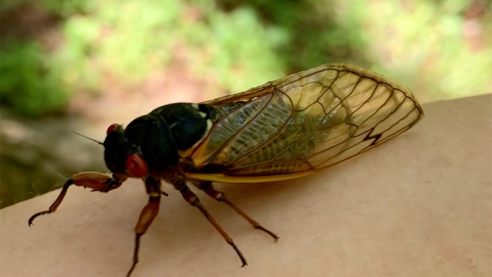

Kun saavuin Baltimoreen asuin ensimmaiset viikkoni Greek Town nimisella alueella. Paadyin sinne, koska se oli lahella tyopaikkaani ja takalaisella mittakaavalla ihan turvallinen alue. Iltaisin siella ei kylla huvittanut yksin liikkua. Majoituin baltimorelle tyypillisen “town housen” kellarissa, joka oli kylla oikein viihtyisa, mutta yhtaan pidemmalla ihmisella paa olisi kylla kolissut kattoon. Lisaksi kampan pihalta avautui vahintaankin jannittava nakyma naapurirakennukseen, jossa vilisi rottia ja niiden perassa kissoja.
Kolmen viikon Greek Townissa asumisen jalkeen jouduin etsimaan uutta kamppaa ja loysin Patterson puiston laidalta aiemman kamppani tapaisen kellarin. Se oli kuitenkin hyvin erilainen kellari ja siina Missa edellisen kamppani ylla asuvat ihmiset olivat paljon poissa ja kotona ollessaan hyvin hiljaisia, tassa kampassa tilanne oli aivan toinen. Suoraan sankyni ylapuolelta kuului pitkin yota askelia ja Jonkin karryn vetamisen aania (minulle selvisi etta ko. asukkaalla oli kaytossa happipullo, jota han ilmeisesti veti karryssa pitkin lattiaa), seka television tauoton pauhaus. Lisaksi kampassa asui n. 4-5 vuotias lapsi, joka oli kylla varmasti ainakin puoliksi jonkin sortin demoni, sen verran h*lvetillista metelia piti viela puolilta oin. Pakkasin siis tavarani muutaman yon jalkeen ja etsin Uuden asunnon.
Viimeisin valiaikaismajoitukseni olikin sitten makuuhuone talosta, jossa asui kaksi muuta, kampan omistaja ja kellarissa alivuokralainen. Tassa talossa viihdyin 6 viikkoa ja Pidan edelleen yhteytta kampan omistajaan. Talossa oli myos pari karvaista kamppista, joista pidin kovasti.
Vaikka tama kamppa ja kamppikset olivatkin kivoja, halusin kuitenkin etsia ns. Oman kampan, etenkin kun miehenikin oli suunnitellut tanne tuloa. Loysin pienen kaksion kerrostalosta Highlandtown nimisella alueella Eastern Avenuen varrella.
Vuoden 2021 toukokuussa, muutamissa Yhdysvaltain itarannikon osavaltioissa kaynnistyi harvinaislaatuinen ilmio, periodisten kaskaiden ilmaantuminen. Onneksemme Maryland oli yksi niista osavaltioista joissa tata paasi todistamaan. Tama ns Brood X Eli vapaasti suomennettuna pesue 10 on kolmen kaskas lajin (Magicicada septendecim, M. cassinii ja M. Septendecula) muodostama joukko, joka ilmestyy joka 17. vuosi maan alta. Nama kaskaat viettavat siis 17 vuotta maan alla imien puiden juurista mahlaa ja ilmestyvat sitten lahes taydellisen synkronoidusti nymfeina (kuva) maan paalle.

Aikuinen kaskas, Brandonin takapiha
Ennen tata maan paalle kaivautuvaa nymfia, kaskas on kaynyt maan alla lapi viisi eri kehitysvaihetta. Maan paalle paastyaan kaskaat luovat nymfi nahkansa (yleensa puun rungolle kiivettyaan) jonka jalkeen ne ovat aikuisia (kuva). Nama aikuiset kaskaat ensin kuivattelevat ulkoisen tukirankansa (tama vie noin viisi paivaa) ja alkavat sitten laulaa. Laulun tarkoituksena on houkutella parittelukumppaneita ja kun parittelut ja muninta on suoritettu kaskaat kuolevat. Tata maanpaallista aikuista elamaa kestaa noin 2-4 viikkoa. Tana kevaana kaskaat ilmestyivat toukokuun lopulla ja paasimme nauttimaan niiden seurailusta noin kuukauden verran. Olimme kuulleet etta kaskaiden pitama meteli on lahes sietamatonta ja niiden suuren maaran takia ulkoilukin on arsyttavaa kun niita on joka paikassa ja kenkien pohjatkin rutisevat niista. Mielestamme tama oli kylla suuresti liioiteltua, kavimme ulkoilemassa varta vasten paikoissa joissa kaskaita oli paljon ja taytyy sanoa etta itse ainakin kovasti pidin naiden kaskaiden laulusta. Pidin myos lounastauoista ulkona kun kaskaita matkahteli ruokapoydan ymparille ja ruokapoytaankin. Nostelin niita valilla kasivarsilleni kavelemaan. Kun kaskaat sitten katosivat, minulla ainakin oli kovasti haikea olo. Melkein pitaisi suunnitella paluuta tanne 17 vuoden paasta. Onneksi taalla on myos vuosittain ilmestyvia kaskaita (namakin tosin viettavat keskimaarin viisi vuotta maan alla ennen kuin nousevat maan pinnalle, mutta koska tama ei ole synkronoitua kuten periodisilla kaskaille, naita kaskaita nousee joka vuosi) (kuva).

{kind=link}
{kind=link}
{kind=link}
{kind=link}